Converts the output of card::circ_compare_groups into a complex geom that is broken down by time/hour and HRV (or any other continuous variable). Each hour is then separated by the grouping variable.
ggcircadian( data, outcome, time = "hour", mean = "mean", n = "n", sd = "sd", se = "se", pval = "pval" )
| data | Table generated which has time variable, categorical outcome variable, and summary statistics, including a possible column called "pval" which, if present, will document statistical significance in plot. |
|---|---|
| outcome | Name of categorical variable to stratify the y-axis |
| time | Name of time group variable, such as hours of day, which ends up being the x-axis |
| mean, n, sd, se, pval | Summary statistics to be included in graphics. |
Returns a ggplot object of geom type, other layers can be added on as seen in example.
Currently creates a ggplot that shows a error bar and point estimate of values by group (e.g. clinical status). If t-test values are available in the data frame, shows points of significance.
# Data data(twins) tbl <- circ_compare_groups(twins, "rDYX", "sad_cat", "hour") # Plot library(ggplot2) ggcircadian(tbl, outcome = "sad_cat") + labs(title = "Example") + scale_color_viridis_d(option = "A", begin = 0.0, end = 0.75)#> #>#> Warning: Removed 24 rows containing missing values (geom_point).